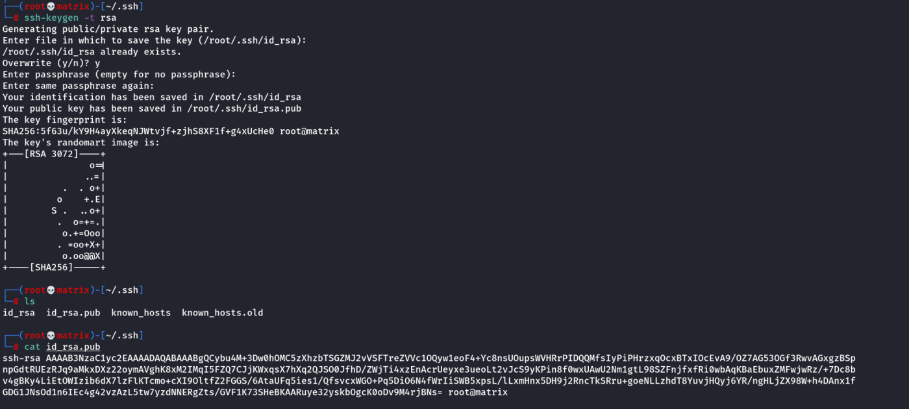

ssh connection with private id file.
Note: Change permission to 600.
chmod 600 id_rsa
ssh -i id_rsa user@Server_IP
Reverse SSH Tunnel
eg.
ssh -L 9999:localhost:10000 agent47@10.10.169.69
The CMS App is hosted in 10.10.169.69 and only accessible to localhost(own system). It is blocked by firewall for Remote Access.
However, using the above method we can access the CMS App remotely.
A reverse tunnel is created at Kali machine(Say at 9999)
Then the app running at localhost:10000 is tunneled to our machine.
SSH Backdoors Using Keys:
https://github.com/NinjaJc01/ssh-backdoor
Or
https://kb.iu.edu/d/aews
ssh-keygen -t rsa
Connect to SSH Backdoor created by the git repository:
Note:
ssh james@10.10.131.235 -p 2222
The above should work. But it fails in Kali Linux
The following command works. Here we are explicitly mentioning ssh-rsa as one of the supported HostKeyAlgorithms
ssh -o HostKeyAlgorithms\ ssh-rsa james@10.10.131.235 -p 2222
Recursive Secure Copy(SCP)
scp -r administrator@10.10.50.60:/Users/Administrator/Downloads /home/cybex/lab/Windows_tools
This will copy (recursively) all the contents inside C:\Users\Administrator\Downloads directory into the local directory mentioned above.
By default SCP uses C: drive in windows, so we need not mention it.
Secure Copy in different Port
scp -P 9090 fox@10.10.93.57:/tmp/shutdown .
Generating SSH keys and sending public key to machines so that we can access them

SSH Tunnel for NFS
We created SSH tunnel to default nfs port: 2049
ssh -L 2049:localhost:2049 paradox@10.10.108.191
mount -t nfs 127.0.0.1: nfs_share
That is reason mount command connected automatically.
Note: If we tunnel to a custom port say 9999
ssh -L 9999:localhost:2049 paradox@10.10.108.191
mount -t nfs -o port=9999 127.0.0.1: nfs_share
Then we have to use -o option in mount with key port=9999 for connection.
SSH Error
Error: Unable to negotiate with 10.10.58.16 port 22: no matching host key type found. Their offer: ssh-rsa,ssh-dss
Solution:
ssh -o HostKeyAlgorithms=+ssh-dss user@10.10.58.16
or
ssh -o HostKeyAlgorithms\ ssh-dss user@10.10.58.16
SSH Using a Pseudo Terminal (To Escape rbash : Restricted Bash):
Using -t which enables "pseudo-tty allocation"
ssh -i id_h4rdy h4rdy@10.10.113.98 -t bash '--noprofile'
SSH Into a Domain System as a Domain USer:
Domain Name: za.tryhackme.com
Username: AD_Username
System to Connect (THMJMP1) : thmjmp1.za.tryhackme.com
ssh za.tryhackme.com\\<AD_Username>@thmjmp1.za.tryhackme.com